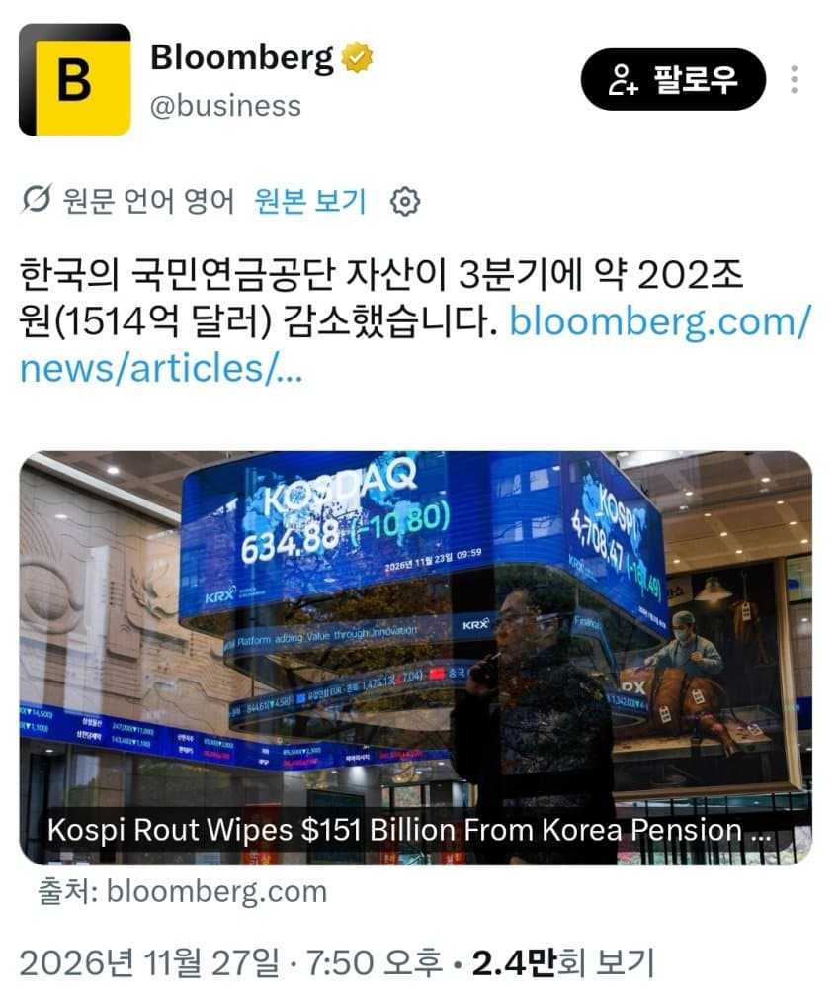
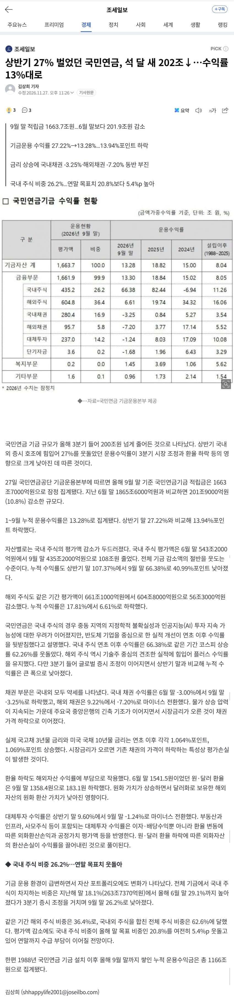
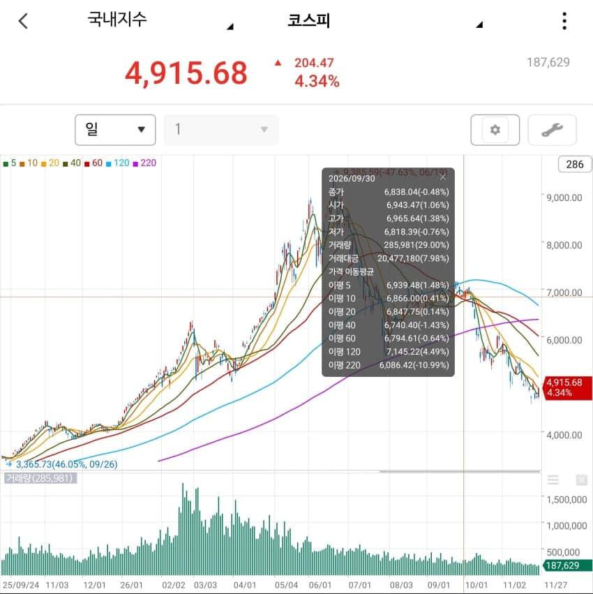

- 상반기 27% 벌었던 국민연금, 석 달 새 202조↓…수익률 13%대로
상반기 27% 벌었던 국민연금, 석 달 새 202조↓…
수익률 13%대로
김상희 기자
입력 2026.11.27. 오후 11:22
수정 2026.11.27. 오후 11:26



9월말 3분기 실적기준이니 현재는 음..
일부 외부·대용량·응답 실패 미디어는 원본 링크로 남아 있습니다.

- 상반기 27% 벌었던 국민연금, 석 달 새 202조↓…수익률 13%대로


댓글
수집 당시 댓글 203개
· ㅇㅇ · 11.28 20:17:29
ㅇㅇ · 11.28 19:47:53
· ㅇㅇ · 11.28 20:05:41
· 윈터커밍 · 11.28 20:07:39
ㅇㅇ · 11.28 19:48:32
· ㅇㅇ · 11.28 19:48:37
· 윈터커밍 · 11.28 20:07:47
· ㅇㅇ · 11.28 20:16:41
ㅇㅇ · 11.28 19:48:34
· ㅇㅇ · 11.28 19:51:11
ㅇㅇ · 11.28 19:49:26
ㅇㅇ · 11.28 19:49:27
ㅇㅇ · 11.28 19:49:42
· ㅇㅇ · 11.28 20:05:55
ㅇㅇ · 11.28 19:49:47
다찢어버려
· 윈터커밍 · 11.28 20:07:56
ㅇㅇ · 11.28 19:49:53
파래진다아아아 · 11.28 19:49:56
ㅇㅇ · 11.28 19:50:48
· ㅇㅇ · 11.28 19:52:43
ㅇㅇ · 11.28 19:51:04
· 윈터커밍 · 11.28 20:08:06
ㅇㅇ · 11.28 19:51:13
ㅇㅇ · 11.28 19:51:22
· ㅇㅇ · 11.28 20:00:03
ㅇㅇ · 11.28 19:51:55
· 윈터커밍 · 11.28 20:08:16
ㅇㅇ · 11.28 19:51:59
· ㅇㅇ · 11.28 20:06:08
ㅇㅇ · 11.28 19:52:22
ㅇㅇ · 11.28 19:52:25
ㅇㅇ · 11.28 19:52:54
아후라마즈다 · 11.28 19:53:21
2456778 · 11.28 19:53:32
ㅇㅇ · 11.28 19:54:37
ㅇㅇ · 11.28 19:54:51
· 섬마을대머리 · 11.28 19:55:52
ㅇㅇ · 11.28 19:55:17
ㅇㅇ · 11.28 19:55:38
· ㅇㅇ · 11.28 19:55:55
· ㅇㅇ · 11.28 20:06:26
ㅇㅇ · 11.28 19:56:55
· ㅇㅇ · 11.28 20:02:35
순수비난 · 11.28 19:57:30
· 순수비난 · 11.28 19:57:45
· 순수비난 · 11.28 19:58:36
· 순수비난 · 11.28 19:59:02
· ㅇㅇ · 11.28 20:06:55
ㅇㅇ · 11.28 19:58:04
4050
찢어
· 윈터커밍 · 11.28 20:08:34
dd · 11.28 19:58:27
ㅇㅇ · 11.28 19:58:29
· ㅇㅇ · 11.28 20:06:45
ㅇㅇ · 11.28 19:58:29
· ㅇㅇ · 11.28 19:59:59
· 윈터커밍 · 11.28 20:08:45
· ㅇㅇ · 11.28 20:17:53
ㅇㅇ · 11.28 19:59:05
ㅁㅁ · 11.28 19:59:08
ㅇㅇ · 11.28 19:59:43
ㅇㅇ · 11.28 19:59:49
4050
형님들도
못받겠놐
민주주의를
위해
희생해야지
· 윈터커밍 · 11.28 20:08:59
ㅇㅇ · 11.28 20:00:01
슈밤베르크 · 11.28 20:00:16
ㅇㅇ · 11.28 20:00:29
· 윈터커밍 · 11.28 20:09:07
ㅇㅇ · 11.28 20:00:30
ㅇㅇ · 11.28 20:00:31
ㅇㅇ · 11.28 20:00:52
ㅇㅇ · 11.28 20:00:56
ㅇㅇ · 11.28 20:02:21
· ㅇㅇ · 11.28 20:07:04
ㅇㅇ · 11.28 20:03:24
외 쳐~!
대 재 명
ㅇㅇ · 11.28 20:03:52
· ㅇㅇ · 11.28 20:04:05
ㅇㅇ · 11.28 20:04:30
· ㅇㅇ · 11.28 20:07:15
ㅇㅇ · 11.28 20:04:38
· 윈터커밍 · 11.28 20:09:26
ㅇㅇ · 11.28 20:06:16
ㅇㅇ · 11.28 20:06:26
ㅇㅇ · 11.28 20:06:31
· 윈터커밍 · 11.28 20:09:32
ㅇㅇ · 11.28 20:07:40
ㅇㅇ · 11.28 20:08:37
ㅇㅇ · 11.28 20:09:12
ㅇㅇ · 11.28 20:09:23
궁민 연금
ㅇㅇ · 11.28 20:09:32
ㅇㅇ · 11.28 20:09:39
ㅇㅇ · 11.28 20:09:39
ㅇㅇ · 11.28 20:09:45
찢어 버려
ㅇㅇ · 11.28 20:09:51
· ㅇㅇ · 11.28 20:11:17
초고추장줄서복잡아프다 · 11.28 20:09:57
ㅇㅇ · 11.28 20:09:59
관타가자 · 11.28 20:12:24
ㅇㅇ · 11.28 20:15:32
· ㅇㅇ · 11.28 20:15:36
푸주한 · 11.28 20:16:42
ㅇㅇ · 11.28 20:16:55
ㅇㅇ · 11.28 19:31:43
llllllIllllll · 11.28 19:31:56
최과학 · 11.28 19:32:03
· ㅇㅇ · 11.28 19:48:48
쿠두두룩 · 11.28 19:32:06
최과학 · 11.28 19:32:06
ㅇㅇ · 11.28 19:32:09
DC전사쿠루미쨩 · 11.28 19:32:11
최과학 · 11.28 19:32:13
ㅇㅇ · 11.28 19:32:15
· ㅇㅇ · 11.28 19:33:53
· 아후라마즈다 · 11.28 19:53:44
· ㅇㅇ · 11.28 19:54:15
ㅇㅇ · 11.28 19:32:17
ㅇㅇ · 11.28 19:32:30
· ㅇㅇ · 11.28 19:38:44
· ㅇㅇ · 11.28 19:55:46
ㅇㅇ · 11.28 19:33:06
ㅇㅇ · 11.28 19:33:17
ㅇㅇ · 11.28 19:33:18
ㅇㅇ · 11.28 19:33:55
ㅇㅇ · 11.28 19:34:10
ㅇㅇ · 11.28 19:34:16
롤클리너리필 · 11.28 19:35:04
ㅇㅇ · 11.28 19:35:21
· ㅇㅇ · 11.28 19:53:05
· 쿠두두룩 · 11.28 19:57:40
· 쿠두두룩 · 11.28 19:59:17
ㅇㅇ · 11.28 19:35:28
ㅇㅇ · 11.28 19:35:34
· ㅇㅇ · 11.28 19:36:05
ㅇㅇ · 11.28 19:35:48
· ㅇㅇ · 11.28 19:35:58
ㅇㅇ · 11.28 19:35:50
ㅇㅇ · 11.28 19:35:55
ㅇㅇ · 11.28 19:36:12
빌애크먼 · 11.28 19:36:23
ㅇㅇ · 11.28 19:36:28
· ㅇㅇ · 11.28 19:36:34
· ㅇㅇ · 11.28 19:36:45
· ㅇㅇ · 11.28 19:41:42
· ㅇㅇ · 11.28 19:41:54
· ㅇㅇ · 11.28 19:45:43
ㅇㅇ · 11.28 19:36:38
· ㅇㅇ · 11.28 19:54:56
ㅇㅇ · 11.28 19:36:45
· ㅇㅇ · 11.28 19:37:34
· ㅇㅇ · 11.28 19:39:20
· ㅇㅇ · 11.28 19:57:55
· ㅇㅇ · 11.28 20:14:34
· ㅇㅇ · 11.28 20:14:42
ㅇㅇ · 11.28 19:37:14
ㅇㅇ · 11.28 19:37:15
히이잉 · 11.28 19:37:19
스턉 · 11.28 19:38:21
씹덕1029일차 · 11.28 19:38:54
진짜잘하노
ㅇㅇ · 11.28 19:38:55
· ㅇㅇ · 11.28 19:42:20
ㅇㅇ · 11.28 19:39:01
· 윈터커밍 · 11.28 20:06:42
ㅇㅇ · 11.28 19:40:12
ㅇㅇ · 11.28 19:40:38
· ㅇㅇ · 11.28 19:41:49
· ㅇㅇ · 11.28 20:05:04
ㅇㅇ · 11.28 19:40:42
ㅇㅇ · 11.28 19:40:42
ㅇㅇ · 11.28 19:40:55
셰셰
· 윈터커밍 · 11.28 20:06:46
ㅇㅇ · 11.28 19:40:59
ㅇㅇ · 11.28 19:41:00
ㅇㅇ · 11.28 19:41:03
ㅇㅇ · 11.28 19:42:09
· ㅇㅇ · 11.28 20:05:16
만갤러 · 11.28 19:42:20
· 윈터커밍 · 11.28 20:06:56
ㅇㅇ · 11.28 19:42:26
· ㅇㅇ · 11.28 19:44:47
· ㅇㅇ · 11.28 19:46:24
ㅇㅇ · 11.28 19:42:50
· ㅇㅇ · 11.28 19:47:25
· 윈터커밍 · 11.28 20:07:06
ㅇㅇ · 11.28 19:43:37
마법진구루구루 · 11.28 19:44:09
ㅇㅇ · 11.28 19:44:16
ㅇㅇ · 11.28 19:44:41
· ㅇㅇ · 11.28 20:05:28
ㅇㅇ · 11.28 19:45:31
ㅇㅇ · 11.28 19:45:53
ㅇㅇ · 11.28 19:46:57
· 윈터커밍 · 11.28 20:07:16
ㅇㅇ · 11.28 19:47:03
· ㅇㅇ · 11.28 19:47:13
ㅇㅇ · 11.28 19:47:21
· ㅇㅇ · 11.28 19:48:03
· ㅇㅇ · 11.28 19:48:13
ㅇㅇ · 11.28 19:47:24
ㅇㅇ · 11.28 19:47:25
ㅇㅇ · 11.28 19:47:52
· 윈터커밍 · 11.28 20:07:30
· ㅇㅇ · 11.28 20:16:12
시아파 · 11.28 19:31:09
ㅇㅇ · 11.28 19:31:12
헌트 · 11.28 19:31:36